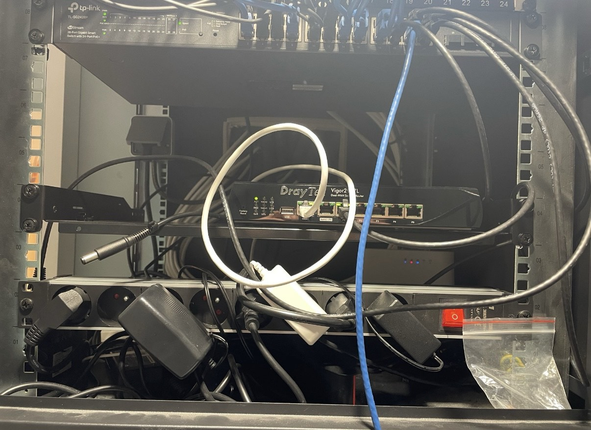

Projet professionnel AP3
Situation professionnelle 1 : contexte, réalisation, preuves et documentation technique associée.
- ALTAWEEL_Mohamad -Waseem-E6-Fiche_situation_professionnelle_1_BTS-SIO_2026.pdf
- ALTAWEEL WASEEM Documentation_technique_situation1 final.pdf